2026-11-16 · drawn with VectorCraft in the family of the sample (docs/icons/sample), version B (the picture at 118%, over the octagon's edge). Today's icon on the left, the new one on the right, each drawn the way the game draws it: a 128 px picture brought down to 64, 48 and 32 px. The last of each set is the new one in grey.
What I see
The last six, whose icons today were already among the better ones, brought into the family: Cantor's lyre and notes, Marin's sea water, coral and moon, Brannoc's hammer, anvil and Heat, Auriel's sun and dawn shield, Vitriol's flasks of three reagents, Shiori's ink strokes and red seal.
Shiori's The Last Character is an invented sign (a spiralling stroke, a stroke under it, two dots), not a real character; a first try read as a real one, a second as a prohibition sign.
Weakest: Cantor's notes are pink and simple; elegant enough at 48 px, but the closest of the forty to cartoon. Brannoc's Quench puts ash clouds over a ring of fire, busy at 32 px.
Redrawn after a first look: Shiori's Flowing Script (an arc like her Ink Lash; now a wave with the brush), The Last Character (twice, see above), Brannoc's Chain Hammer (its chain ran into the key letter's corner).
At 32 px
Each spell: today · new · new in grey · new under the desktop bar's key letter · new in the phone's round slot; brought down to 32 px, then shown twice larger.
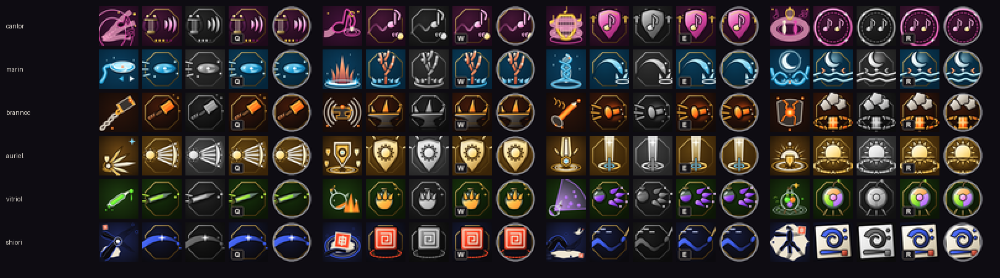
Cantor the Last Verse
The art bible's Bard row, parchment as its foil.
corehotbodyaccentdark
SpellTodayNew
QResounding ChordNo cooldown. A chord in a 5 m cone: 22, and 9% more for each step of Crescendo. On the beat it adds a step; cast at 5 it hits for 32, silences 0.5 s and the Crescendo starts again. Off the beat: 6 damage and the Crescendo is gone.
WSiren SongNo cooldown. Spends the Crescendo: a note flies at the enemy (8 m, 10 m/s) and charms them 0.25 s for each step (1.25 s at 5): they walk toward him and cannot act. Off the beat it charms nobody. Cover breaks the note: step behind a pillar as it flies. An enemy that cannot be charmed (a raid boss) is struck instead: 36 for each step.
ERising ChorusNo cooldown. Spends the Crescendo: a shield of 15 for each step (75 at 5) for 3 s, and +25% speed for 1.5 s. Off the beat it gives nothing.
RDuetA ring (6 m) closes round him in 0.8 s and holds 3.4 s: neither of you can leave it. Each beat it pulses for 18 (more with the Crescendo), and his clean spells inside it also silence 0.5 s. On the beat it adds a step. Cannot be cast while the enemy is charmed. Once in 11 s.
The spell bar, desktop (1280 wide)Phone (375 wide)
Marin the Tide Dancer
The art bible's Tide row, foam as its foil, coral as the accent.
corehotbodyaccentdark
SpellTodayNew
QWave DiscThrows a spinning disc of water 9 m down the aim (0.3 s wind-up, fast): 52 damage. High tide: it knocks the enemy back 2.5 m. Low tide: it pulls the enemy 2.5 m toward her.
WCoral SpireA coral pillar rises at a spot (8 m) after 0.9 s and stands for 5 s as a real obstacle. As it rises, the enemy within 2.5 m is hit for 44: High tide shoves it 3 m away, Low tide drags it 2 m to the pillar.
EMist FormShe turns to water and flows up to 6 m to the aim, through the enemy if it is in the way: untouchable for the 0.25 s of the run. She reforms at the end spot in a splash (40 damage within 3 m) and the tide flips.
RMoon's PullUltimate. She roots herself under a moon for 3 s (a stun, silence or knock-up ends it). The tide is held at Low and her pulls are doubled; an enemy within 12 m she can see is dragged toward her at 2.4 m/s for 24 damage a second, and a 110 tide crash lands if it is within 2.5 m when the moon sets.
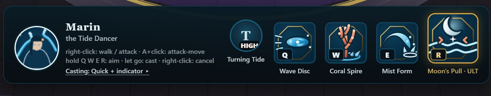
The spell bar, desktop (1280 wide)
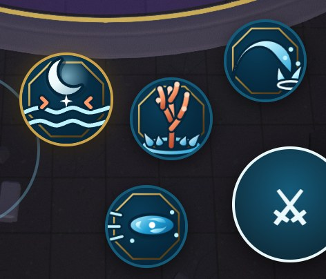
Phone (375 wide)
Brannoc the Ashen Smith
The art bible's Forge row, ash as its foil.
corehotbodyaccentdark
SpellTodayNew
QChain HammerNo cooldown, +40 Heat. Hurls a hammer on a chain 9 m down the aim: 19 damage cold, 39 white-hot, drags the first enemy it touches 4 m to him and slows them 1 s.
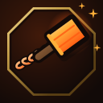
WForge RoarNo cooldown, +30 Heat. For 3 s: +30% armour, and his next basic attack is a slam: +30 damage and a 0.5 s knock-up.
ERed-Hot RivetNo cooldown, +30 Heat. Flicks a rivet at an enemy in sight (6 m), which burns on for 2 s: 20 damage in all cold, 43 white-hot.
RQuenchSpends all his Heat. He plants himself, a 3 m ring shows for 0.6 s, then it bursts for 30 plus 0.5 per point of Heat (80 at white heat) and throws them back. From white heat it also stuns 0.75 s. The only way out of white heat. Once in 11 s.
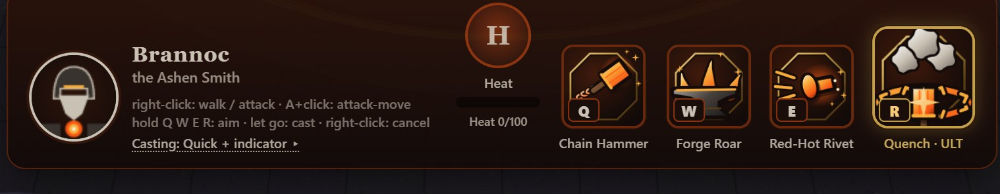
The spell bar, desktop (1280 wide)
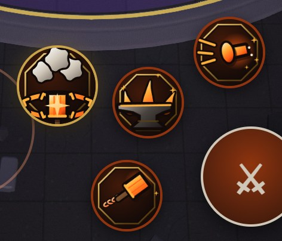
Phone (375 wide)
Auriel the Dawn Paladin
The art bible's Dawn row, ivory as its foil.
corehotbodyaccentdark
SpellTodayNew
QFirst LightA wave of light in a 6 m cone: 40. Hitting the enemy gives her a 14 shield for 3 s, but not while Dawnward or Sunrise holds. When that shield ends it bursts for 8 in 3 m.
WDawnwardA 45 shield for 3 s. While it holds, her basic attacks reach 3 m farther. Press again to pop it now. When it ends it bursts for 27 in 3 m. It cannot be cast while Sunrise holds.
EOathbrandA beam falls on the enemy (7 m) 0.5 s later if she still has sight: 44, and branded for 2.5 s. A burst that catches a branded enemy also stuns them 0.8 s.
RSunriseA 130 shield for 5 s, and she floats. Press again to pop it. When it breaks, runs out or is popped, a 5 m ring appears fixed at her spot, closes for 1.6 s and bursts for 80. It does not follow her.
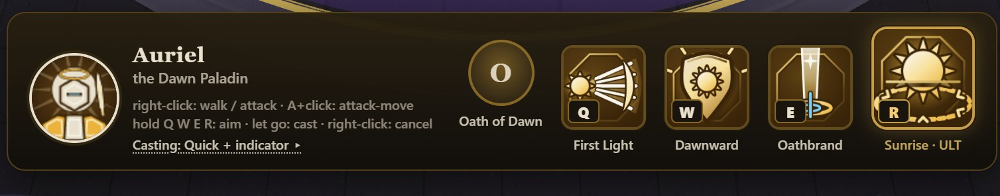
The spell bar, desktop (1280 wide)
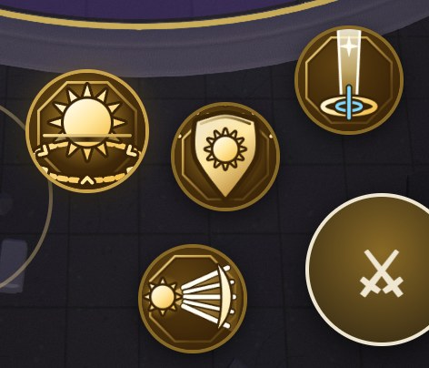
Phone (375 wide)
Vitriol the Plague Alchemist
The art bible's Alchemy row, glass as its foil; her three reagents (green toxin, orange fire, violet acid).
corehotbodyaccentdark
SpellTodayNew
QToxin DartA fast glass dart (9 m): 20, then 25 more over 3 s. Leaves green toxin on the enemy for 4 s. Reaches 6 m in about half a second: step off the line.
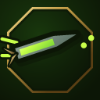
WFire VialA vial of fire that cannot miss (7 m, needs sight): 18, then 25 more over 2 s. Leaves orange fire on the enemy for 4 s.
EAcid SplashA 4 m cone of violet acid in front of her: 40 and a shove back. Leaves violet acid on the enemy for 4 s. Her answer to being rushed.
RHomunculusUltimate. A little walking bomb (120 HP, 4 m/s) climbs out at her feet with all three reagents in its belly and walks at the enemy. It bursts on the enemy for 55 and sets off every reaction at once. Shoot it down or outrun it.
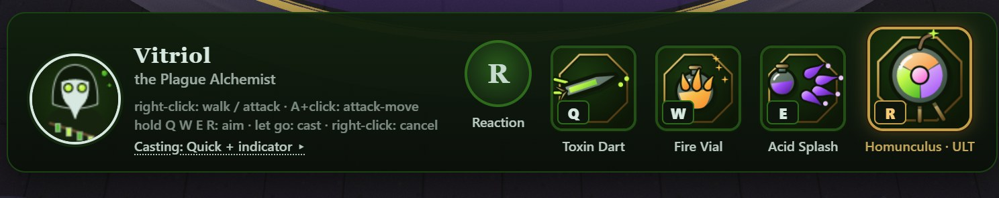
The spell bar, desktop (1280 wide)
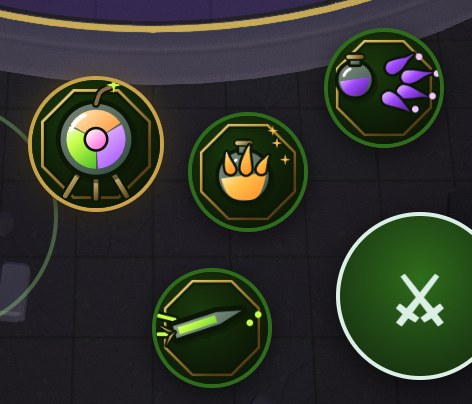
Phone (375 wide)
Shiori the Last Brush
The art bible's Ink row, rice paper as its foil, the seal's red as the accent.
corehotbodyaccentdark
SpellTodayNew
QInk LashA lash of ink (9 m): 66, and a stroke along its path that stays 5 s. Standing on ink slows and Stains. Where strokes cross, a point bursts for 40.
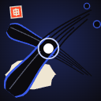
WSeal of BindingStamps a 2 m seal (8 m), armed after 0.5 s, for 6 s. An enemy who steps in is rooted 1 s and Stained. Once armed it counts as a stroke for crossings.
EFlowing ScriptGlides 6 m and paints a stroke along her path. Do not follow her down the line.
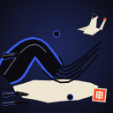
RThe Last CharacterUltimate. Writes one great character (9 m, 4 m wide) in 1.0 s: 40 and rooted 1 s inside it. Every stroke of hers under the enemy erupts for 50, 3 at most, and vanishes.
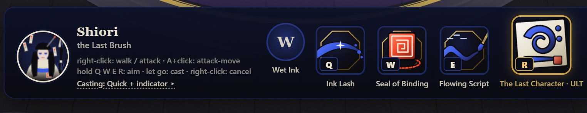
The spell bar, desktop (1280 wide)
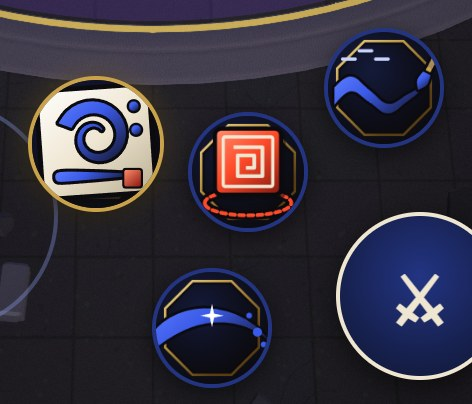
Phone (375 wide)
File sizes
The SVGs the game loads (public/icons/spells/), only when a hero's slots are first drawn.
Icon
SVG
gzipped
cantor-e
5.6 KB
1.2 KB
cantor-q
13.2 KB
2.7 KB
cantor-r
5.6 KB
1.3 KB
cantor-w
4.3 KB
1.1 KB
marin-e
7.8 KB
2.0 KB
marin-q
7.5 KB
2.4 KB
marin-r
4.9 KB
1.2 KB
marin-w
10.3 KB
2.0 KB
brannoc-e
5.0 KB
1.3 KB
brannoc-q
8.4 KB
1.8 KB
brannoc-r
10.1 KB
2.0 KB
brannoc-w
6.4 KB
1.6 KB
auriel-e
3.3 KB
0.9 KB
auriel-q
7.6 KB
1.6 KB
auriel-r
6.4 KB
1.3 KB
auriel-w
6.7 KB
1.3 KB
vitriol-e
8.3 KB
1.9 KB
vitriol-q
4.1 KB
1.0 KB
vitriol-r
6.5 KB
1.7 KB
vitriol-w
7.4 KB
1.8 KB
shiori-e
4.5 KB
1.1 KB
shiori-q
4.4 KB
1.3 KB
shiori-r
9.5 KB
2.3 KB
shiori-w
3.4 KB
1.1 KB
All 24
161.2 KB
38.0 KB
Files: the drawings pipeline/icons/vectorcraft/draw/<hero>.py, the shared rules vclib.py, the runner make.py, this page page.py (batches.json holds the notes).